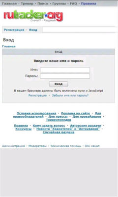

RUTRACKER 速查：9 个新手最该先搞懂的问题
整理了 RUTRACKER 安卓客户端使用中最常碰到的九个问题——从它到底是什么、为什么主域名打不开，到俄语搜不到资源、注册窗口时开时关，每条给一个直接了当的答案。
整理一篇关于 RUTRACKER 的快问快答，把新手最容易卡壳的几个点摊开说清楚，每条直接给结论，再补两三句解释。
它到底是什么，装上就能下载吗？
不能直接下。RUTRACKER官网出品的这个安卓客户端，安装包从官方下载获取。它的职责是登录社区、浏览搜索、拿到种子文件或磁力链接，真正的下载由 BT 客户端（比如 qBittorrent）完成。三层分工打个比方：App 是图书馆的检索台，rutracker.org 网站是图书馆本身，BT 客户端才是把书搬回家的车。多数用户的实际用法就是手机上找资源、取磁力链，交给电脑或 NAS 慢慢下。
为什么 rutracker.org 打不开？
主域名在多个地区被 ISP 拦截。先换官方镜像域名（常见的是 net 和 nl 两个），再不行就换网络出口——比如从 Wi-Fi 切到移动数据，或者换一个节点。Error 1020 报错是 Cloudflare 前置防火规则拦了你的出口 IP，本质还是同一个问题，换出口就能解。
搜出来的全是俄语标题，看不懂怎么搜？
界面可以切中文，内容标题靠浏览器翻译，搜索则靠拉丁转写——用拉丁字母拼出的俄语词能直接命中西里尔原文的资源。比如搜 Stalker 能找到塔可夫斯基的《潜行者》，搜 Tolstoy 能找到托尔斯泰。同一个名字往往有两三种转写派系，搜不到就换一种拼法。最快的取原名捷径：维基百科切俄语版，标题就是西里尔原名，复制过去命中率接近百分之百。这些只是最常用的几招，更完整的音译规则和搜索攻略在RUTRACKER文档里都有整理。
注册为什么时开时关，花钱买账号靠谱吗？
注册窗口是管理员压制机器人账号的开关策略，关闭期只能等，没别的办法。花钱买现成账号则坚决不碰——卖号市场几乎全是封号、赃号或钓鱼的，轻则两三天就被回收，重则连绑定邮箱一起丢。这个社区 1200 万以上的注册账号意味着管得极严，任何非正规途径进来的号都活不长。
下载速度为什么只有 50 KB/s，是我网络问题吗？
大概率不是你网络的问题，是全局分享率跌破 0.3 触发了社区限速。做种回血就能解除限速——每下载一个资源做完种子至少挂 24 小时，这是社区通行的经验基线，既保分享率也回馈生态。BitTorrent 的机制是下的人越多越快，热门资源有大量做种者同时上传，速度反而有保障；真正慢的是做种人数个位数的冷门资源。

手机上能完成整个下载流程吗？
小文件可以——在安卓上装一个移动版 BT 客户端，取到磁力链后直接交给它就行。但大文件不建议这么做，长时间挂机做种对手机电池和存储都是负担，更稳妥的做法是手机取链、电脑或 NAS 下载。
它和网页版功能重复吗，只用 App 够不够？
基本重复。网页版（含移动端浏览器访问）能做的搜索、看详情页、下种子、复制磁力链，App 都能做，且对小屏做了适配。反过来，社区论坛的发帖、回复、写评论这些深度参与功能，还是浏览器更顺手。实际选择很简单：只找资源、偶尔用用，App 够了；要发资源、写评论、深度逛论坛，浏览器登录网页版补足。
这个社区的规模到底有多大，资源靠谱吗？
几个关键量级：1200 万以上注册账号、110 万以上活跃种子、资源总量 2 PB 以上，绝大多数发布页存活比例在 94% 以上。常见需求基本都能搜到，冷门需求要靠分类浏览碰运气。社区按论坛版块组织资源，每个版块有版主和发布规则，资源页普遍带评论和感谢数——相比来路不明的聚合站，这里的资源页信息完整度高得多。
用这个 App 合规吗？
App 本身是正常的安卓应用，没有问题。下载行为的合规性取决于你下载的内容和所在地的规定，这个边界自己心里有数就行。社区有明确的合规与版权边界说明，去看一眼不会吃亏。
最后一句：能接受"取链 + BT 客户端接力"这个模式的话，RUTRACKER 值得装一个。